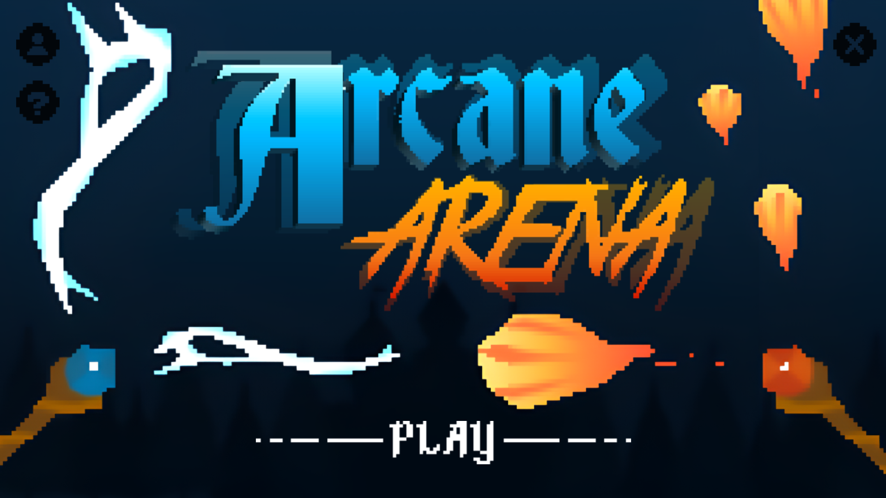
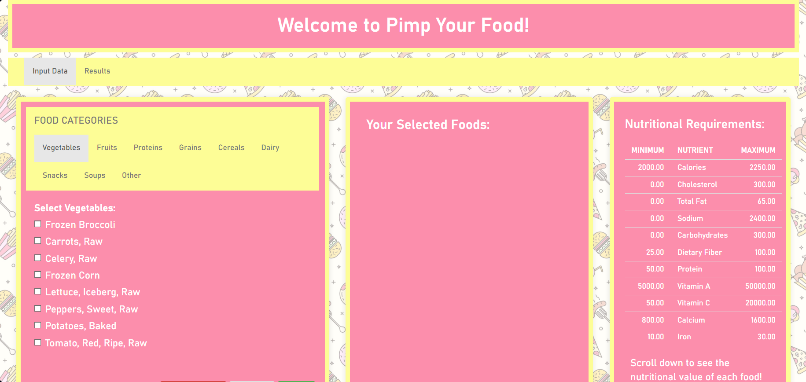

This project was created with java. It is a PVP shooting game complete with multiple shot types and special abilities.

This one, on the other hand, was created with R and HTML. It is a webpage used as a tool to calculate the perfect portions of a well-balanced diet.
Liesl is good at managing tasks, staying organized, and making sure things get done efficiently. She knows how to prioritize and make sure everything runs as smoothly as possible.
When it comes to web programming, she knows how to use HTML and CSS to build and style websites. She also has experience with different programming languages and enjoys making things work smoothly and look nice.
In addition, she thrives in group settings and works best when there are other people to collaborate with.
Liesl Chan is a student at the University of the Philippines Los
Banos, currently pursuing a Bachelor of Science in Computer Science.
She has a strong passion for technology and problem-solving, leading
her on this path of pursuing a computer-related degree. Liesl has
experience in multiple programming languages, such as C, Python, R,
and Java, and has worked on various projects involving the
aforementioned. Despite this particular project being one of her
requirements to pass the class, she thoroughly enjoyed the process of
developing it, and is looking forward to continuing her work in the tech
field.